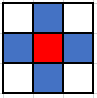
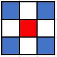
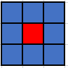

Adjacency
GoRogue provides convenient methods to calculate and retrieve neighboring grid locations via the AdjacencyRule class. This class also provides easy methods to get the Direction instances that lead to those neighbors.
Instances of the AdjacencyRule class cannot be created by the user. Instead, three instances are included as static members of the AdjacencyRule class, which represent all possible ways of defining adjacency on a 2d integer-based grid. Each instance, and how it defines adjacency, is covered below. Functions of these instances may be used to retrieve the Direction instances that lead to adjacent squares, as well as the coordinates of each square adjacent to a given point.
Methods of Determining Adjacency
The three instances included are AdjacencyRule,CARDINALS, AdjacencyRule.DIAGONALS, and AdjacencyRule.EIGHT_WAY. These instances and how they define adjacency is covered below.
AdjacencyRule.CARDINALS
This rule is effectively standard 4-way connectivity -- a location is "adjacent" to another if it is within 1 cardinal step away. In the image below, the red grid location is the starting cell, and the blue grid locations are those that are considered adjacent by this rule:

AdjacencyRule.DIAGONALS
This rule considers a location "adjacent" to another if it is within one diagonal step away. Again, in the image below, the red grid location represents the starting cell, and the blue grid locations are those that are considered adjacent by this rule:

AdjacencyRule.EIGHT_WAY
This rule is effectively standard 8-way connectivity -- a location is "adjacent" to another if it is within 1 step in any direction. Like in the previous images, in the image below the red grid location represents the starting cell, and the blue grid locations are those that are considered adjacent by this rule:

Getting Directions of Neighbors
AdjacencyRule provides a few functions to allow you to get the directions that lead to neighbors of a location. The API documentation covers these in detail, however this may serve as a quick overview of their functionality.
The AdjacencyRule.DirectionsOfNeighbors function is the most straightforward; it returns you an IEnumerable<Direction> with all the directions that lead to neighbors:
foreach (Direction d in AdjacencyRule.EIGHT_WAY.DirectionOfNeighbors())
System.Console.WriteLine(d);
The AdjacencyRule.DirectionsOfNeighborsClockwise and AdjacencyRule.DirectionsOfNeighborsCounterclockwise functions work the same way, except that they return the directions in clockwise and counter-clockwise order, respectively. In addition, both of these functions optionally take a Direction instance that will be the first direction returned. Directions are returned in clockwise or counter-clockwise order as appropriate, starting from the given direction:
// Returns directions in order Direction.LEFT, Direction.RIGHT, Direction.DOWN, Direction.UP.
// AdjacencyRule.DirectionsOfNeighborsCounterclockwise functions similarly.
foreach (Direction d in AdjacencyRule.CARDINALS.DirectionsOfNeighborsClockwise(Direction.LEFT))
System.Console.WriteLine(d);
Getting Locations of Neighbors
AdjacencyRule also provides a few functions to allow you to get the coordinates that represent neighbors of a given location. This may prove to be more convenient than using the functions which return Directions and adding those Direction instances to a position. Again, the API documentation covers these in detail, however this may serve as a quick overview of their functionality.
These functions work very similarly to their Direction-based equivalents. AdjacencyRule.Neighbors returns an IEnumerable<Coord> for each neighboring position:
Coord position = (1, 2);
foreach (Coord neighbor in AdjacencyRule.EIGHT_WAY.Neighbors(position))
System.Console.WriteLine(neighbor);
The AdjacencyRule.NeighborsClockwise and AdjacencyRule.NeighborsCounterclockwise functions work the same way, except that they return the coordinates in clockwise and counter-clockwise order, respectively. In addition, both of these functions optionally take a Direction instance, which indicates which position to return first. Positions are returned in clockwise or counter-clockwise order as appropriate, starting from the position that is located in the given direction:
Coord position = (1, 2);
// Returns directions in clockwise order, starting with the position located in the direction Direction.LEFT.
// AdjacencyRule.NeighborsCounterclockwise functions similarly.
foreach (Direction d in AdjacencyRule.CARDINALS.NeighborsClockwise(position, Direction.LEFT))
System.Console.WriteLine(d);
Implicit Conversion for Related Types
For any given Distance or Radius class instance, a method of determining adjacency is implied due to the mathematical concepts those classes represent. Therefore, both Distance and Radius instances may be implicitly converted to their corresponding AdjacencyRule instance. As a result of this, any function that accepts a parameter of type AdjacencyRule may also simply be passed a Distance or Radius instance, and that instance will be converted to the corresponding AdjacencyRule automatically.
The correspondance between Distance instances and AdjacencyRule instances is as follows:
Distance.MANHATTAN->AdjacencyRule.CARDINALSDistance.CHEBYSHEV->AdjacencyRule.EIGHT_WAYDistance.EUCLIDEAN->AdjacencyRule.EIGHT_WAY
The correspondance between Radius instances and AdjacencyRule instances is similar:
Radius.CIRCLEorRadius.SPHERE->AdjacencyRule.EIGHT_WAYRadius.SQUAREorRadius.CUBE->AdjacencyRule.EIGHT_WAYRadius.DIAMONDorRadius.OCTAHEDRON->AdjacencyRule.CARDINALS
A demonstration of some of these conversions can be seen via the following code:
// Both of these function without compiler error, since implicit conversions are defined.
AdjacencyRule rule = Distance.MANHATTAN;
rule = Radius.SQUARE;
// Assuming a function MyFunc(AdjacencyRule rule) is defined
MyFunc(Distance.CHEBYSHEV);